Change analysis for Ukraine for PRIMAP-hist v2.7_final compared to
v2.6.1_final
Overview over
emissions by sector and gas
The following figures show the aggregate national total emissions
excluding LULUCF AR6GWP100 for the country reported priority scenario.
The dotted linesshow the v2.6.1_final data.
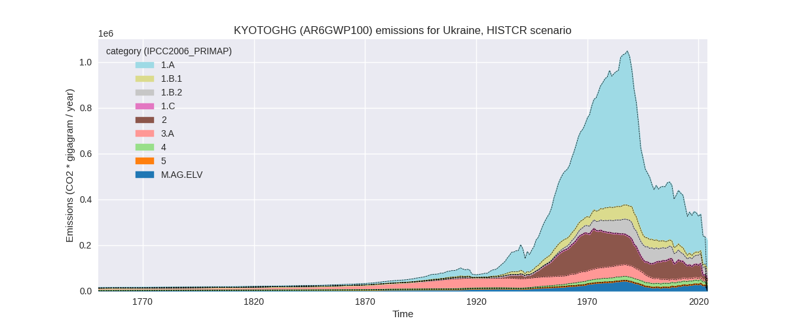
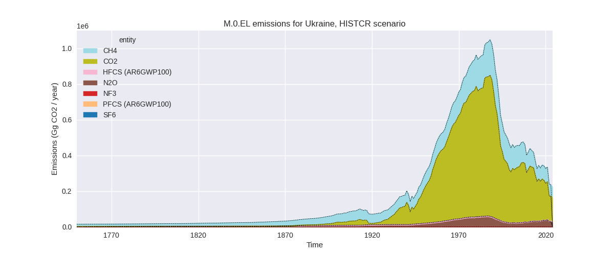
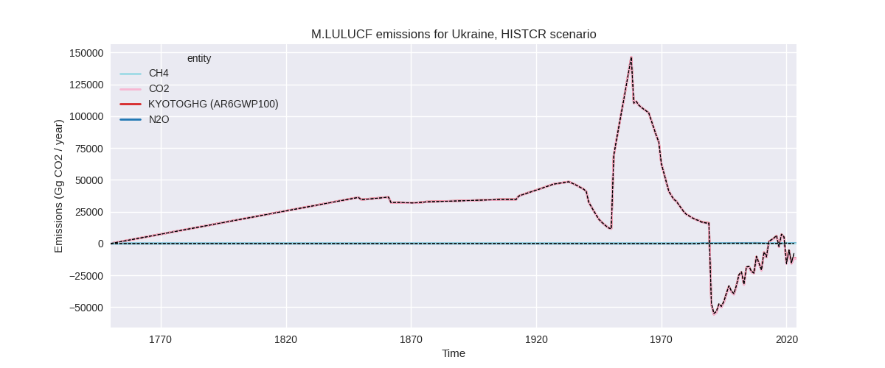
The following figures show the aggregate national total emissions
excluding LULUCF AR6GWP100 for the third party priority scenario. The
dotted linesshow the v2.6.1_final data.
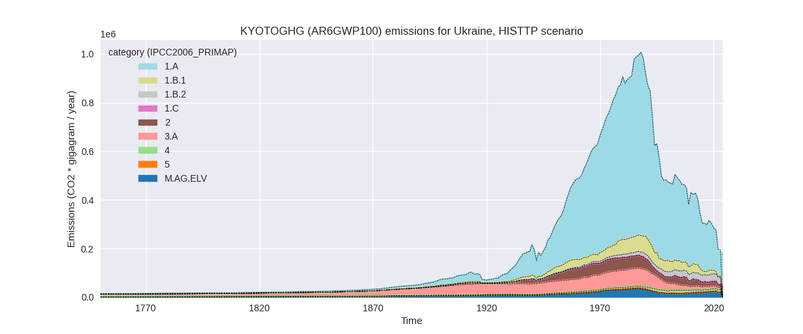
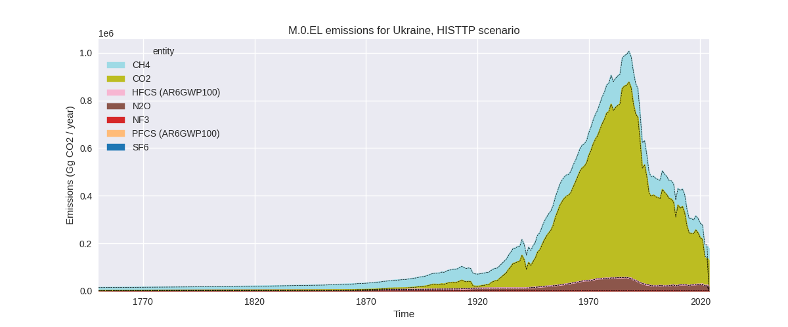
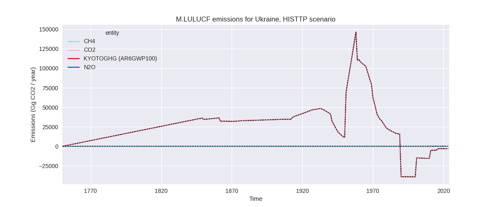
Overview over changes
In the country reported priority scenario we have the following
changes for aggregate Kyoto GHG and national total emissions excluding
LULUCF (M.0.EL):
- Emissions in 2023 have changed by -1.8%% (-4345.41 Gg CO2 / year)
- Emissions in 1990-2023 have changed by -0.1%% (-423.32 Gg CO2 / year)
In the third party priority scenario we have the following changes
for aggregate Kyoto GHG and national total emissions excluding LULUCF
(M.0.EL):
- Emissions in 2023 have changed by -4.2%% (-8231.29 Gg CO2 / year)
- Emissions in 1990-2023 have changed by -0.1%% (-474.79 Gg CO2 / year)
Most
important changes per scenario and time frame
In the country reported priority scenario the
following sector-gas combinations have the highest absolute impact on
national total KyotoGHG (AR6GWP100) emissions in 2023
(top 5):
- 1: 1.B.2, CH4 with -3744.79 Gg CO2 / year (-11.8%)
- 2: 1.A, CO2 with 1451.57 Gg CO2 / year (1.2%)
- 3: 2, CO2 with -1353.82 Gg CO2 / year (-7.6%)
- 4: 2, CH4 with -566.98 Gg CO2 / year (-76.4%)
- 5: 2, N2O with 560.28 Gg CO2 / year (41.1%)
In the country reported priority scenario the
following sector-gas combinations have the highest absolute impact on
national total KyotoGHG (AR6GWP100) emissions in
1990-2023 (top 5):
- 1: 5, N2O with -1120.58 Gg CO2 / year (-100.0%)
- 2: 3.A, CH4 with 499.32 Gg CO2 / year (2.5%)
- 3: M.AG.ELV, N2O with 282.92 Gg CO2 / year (1.3%)
- 4: 1.B.2, CH4 with -110.14 Gg CO2 / year (-0.2%)
- 5: 1.A, CO2 with 44.92 Gg CO2 / year (0.0%)
In the third party priority scenario the following
sector-gas combinations have the highest absolute impact on national
total KyotoGHG (AR6GWP100) emissions in 2023 (top
5):
- 1: 1.A, CO2 with -8231.28 Gg CO2 / year (-7.8%)
- 2: 1.A, CH4 with 0.00 Gg CO2 / year (0.0%)
- 3: 2, HFCS (AR6GWP100) with 0.00 Gg CO2 / year (0.0%)
- 4: 2, PFCS (AR6GWP100) with 0.00 Gg CO2 / year (0.0%)
- 5: M.AG.ELV, N2O with 0.00 Gg CO2 / year (0.0%)
In the third party priority scenario the following
sector-gas combinations have the highest absolute impact on national
total KyotoGHG (AR6GWP100) emissions in 1990-2023 (top
5):
- 1: 1.A, CO2 with -474.79 Gg CO2 / year (-0.1%)
- 2: 1.A, CH4 with 0.00 Gg CO2 / year (0.0%)
- 3: 2, HFCS (AR6GWP100) with 0.00 Gg CO2 / year (0.0%)
- 4: 2, PFCS (AR6GWP100) with 0.00 Gg CO2 / year (0.0%)
- 5: M.AG.ELV, N2O with 0.00 Gg CO2 / year (0.0%)
Notes on data changes
Here we list notes explaining important emissions changes for the
country.
- Data from BTR1 has been replaced by data from the 2025 National
Inventory Submission. This leads to changes in several sectors and gases
which are relatively small in terms of total emissions.
- CH4 in 1.B.2 is lower in 2023 because of declining emissions which
are not modeled by EDGAR data used for extrapolation in v2.6.1.
- Energy CO2 emissions are slightly higher for 2023 because growth
rates in the CR data are higher than the growth rates in EI2024 used for
extrapolation in PRIMAP-hist v2.6.1.
- CO2 IPPU emissions are lower in 2023 because metal industry
emissions are lower than in v2.6.1 because the country reported data
shows a decline not present in EDGAR data.
- CH4 from the IPPU sector is lower because emissions from the
chemical industry have dropped to zero (because there are no emissions
reported for 2.B.8.b. (Ethylene) and 2.B.8.c. (Ethylene dichloride and
vinyl chloride monomer). In contrast N2O from the chemical industry is
up because of an increase in nitric Acid production. CO2 from chemical
industry is up due to an increase in Ammonia production.
- N2O in the “other” sector is now zero as it is reported as “not
occurring” (NO) which we interpret as zero. This is the main change for
cumulative emissions.
- There are small changes for agricultural emissions for all years due
to changes in emissions factors and activity data.
- Changes in the TP scenario are limited to 2023 and come from the
updated EI data for energy CO2.
Changes by sector and gas
For each scenario and time frame the changes are displayed for all
individual sectors and all individual gases. In the sector plot we use
aggregate Kyoto GHGs in AR6GWP100. In the gas plot we usenational total
emissions without LULUCF.
country reported scenario
2023
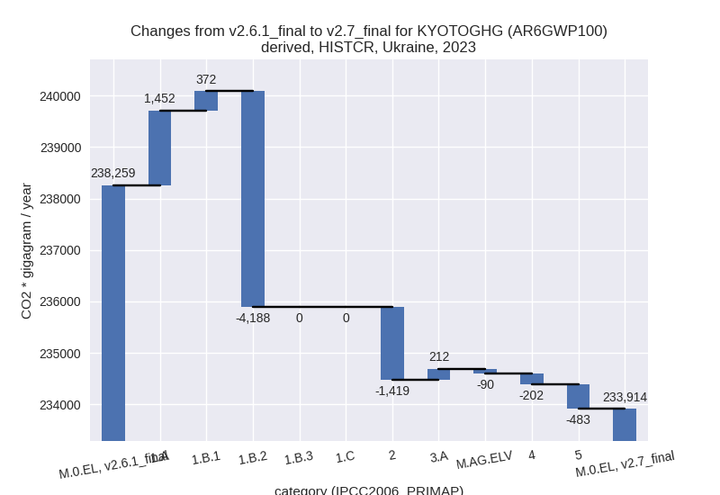
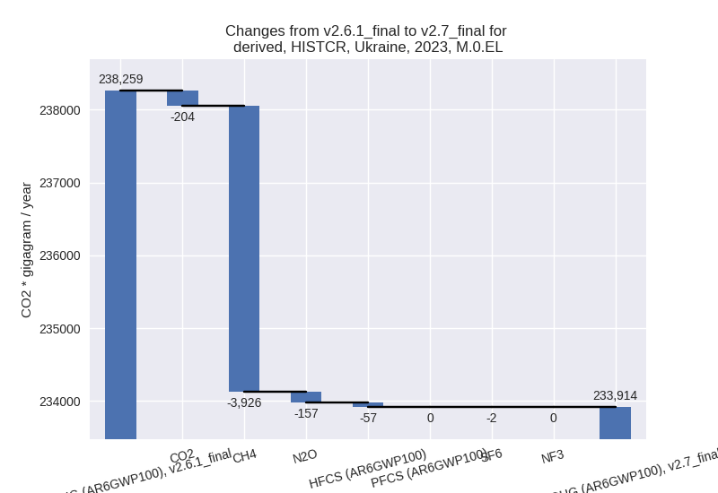
1990-2023
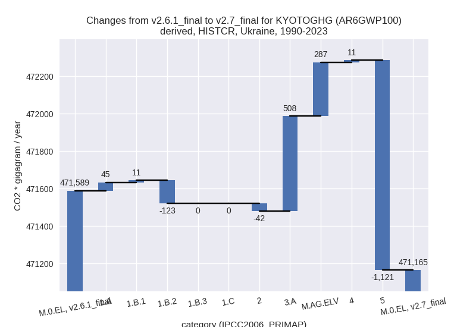
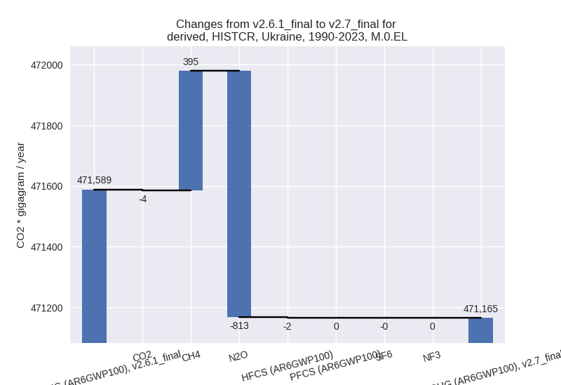
third party scenario
2023
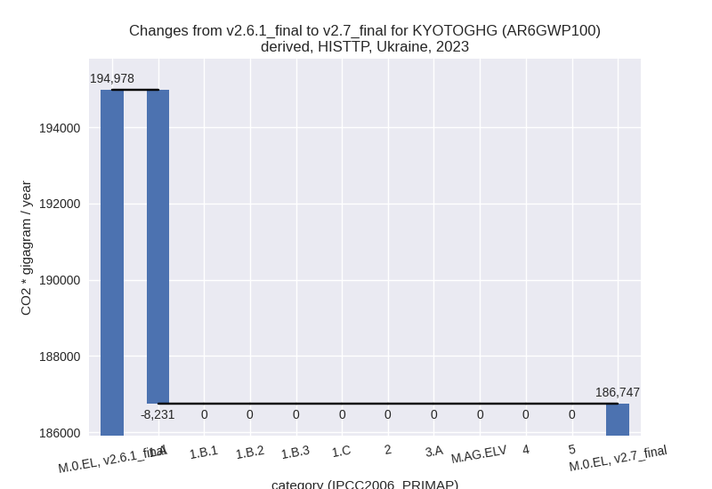
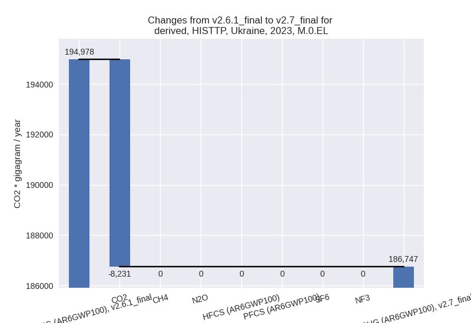
1990-2023
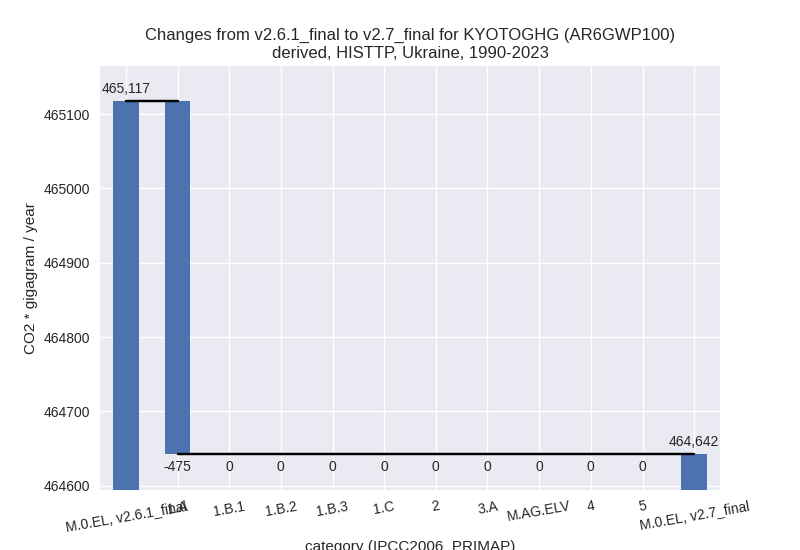
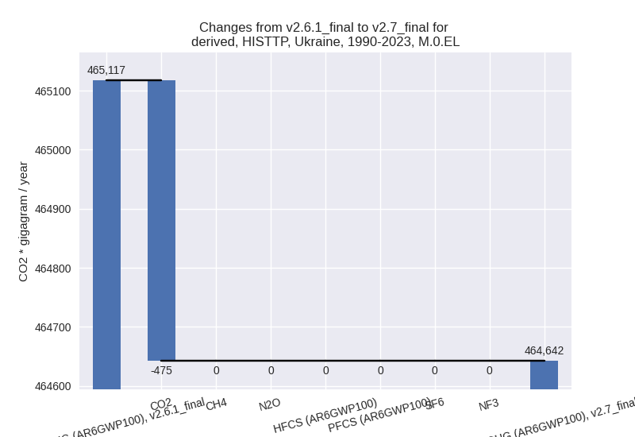
Detailed changes for the
scenarios:
country reported scenario
(HISTCR):
Most important changes
per time frame
For 2023 the following sector-gas combinations have
the highest absolute impact on national total KyotoGHG (AR6GWP100)
emissions in 2023 (top 5):
- 1: 1.B.2, CH4 with -3744.79 Gg CO2 / year (-11.8%)
- 2: 1.A, CO2 with 1451.57 Gg CO2 / year (1.2%)
- 3: 2, CO2 with -1353.82 Gg CO2 / year (-7.6%)
- 4: 2, CH4 with -566.98 Gg CO2 / year (-76.4%)
- 5: 2, N2O with 560.28 Gg CO2 / year (41.1%)
For 1990-2023 the following sector-gas combinations
have the highest absolute impact on national total KyotoGHG (AR6GWP100)
emissions in 1990-2023 (top 5):
- 1: 5, N2O with -1120.58 Gg CO2 / year (-100.0%)
- 2: 3.A, CH4 with 499.32 Gg CO2 / year (2.5%)
- 3: M.AG.ELV, N2O with 282.92 Gg CO2 / year (1.3%)
- 4: 1.B.2, CH4 with -110.14 Gg CO2 / year (-0.2%)
- 5: 1.A, CO2 with 44.92 Gg CO2 / year (0.0%)
Changes in the main sectors for aggregate KyotoGHG (AR6GWP100)
are
- 1: Total sectoral emissions in 2022 are 170245.71
Gg CO2 / year which is 70.9% of M.0.EL emissions. 2023 Emissions have
changed by -1.4% (-2362.85 Gg CO2 /
year). 1990-2023 Emissions have changed by -0.0% (-67.27 Gg CO2 / year).
- 2: Total sectoral emissions in 2022 are 22003.10 Gg
CO2 / year which is 9.2% of M.0.EL emissions. 2023 Emissions have
changed by -6.2% (-1419.20 Gg CO2 /
year). 1990-2023 Emissions have changed by -0.1% (-41.74 Gg CO2 / year). For 2023 the
changes per gas
are:
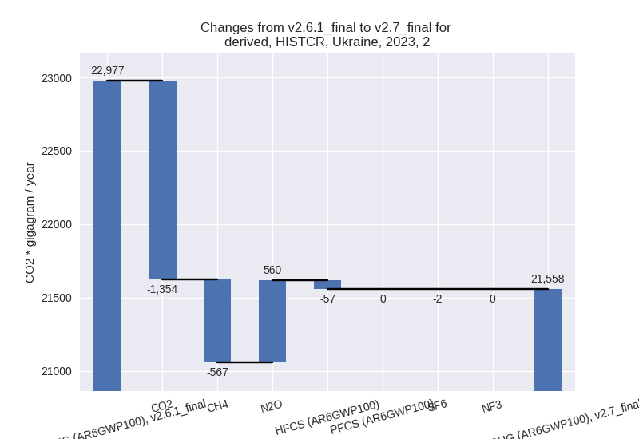
- M.AG: Total sectoral emissions in 2022 are 33173.85
Gg CO2 / year which is 13.8% of M.0.EL emissions. 2023 Emissions have
changed by 0.4% (121.99 Gg CO2 /
year). 1990-2023 Emissions have changed by 1.8% (795.33 Gg CO2 / year).
- 4: Total sectoral emissions in 2022 are 14747.12 Gg
CO2 / year which is 6.1% of M.0.EL emissions. 2023 Emissions have
changed by -1.3% (-202.10 Gg CO2 /
year). 1990-2023 Emissions have changed by 0.1% (10.94 Gg CO2 / year).
- 5: Total sectoral emissions in 2022 are 0.00 Gg CO2
/ year which is 0.0% of M.0.EL emissions. 2023 Emissions have changed by
-100.0% (-483.26 Gg CO2 / year).
1990-2023 Emissions have changed by -100.0% (-1120.58 Gg CO2 / year). For 2023
the changes per gas
are:
For 1990-2023 the changes per gas
are:
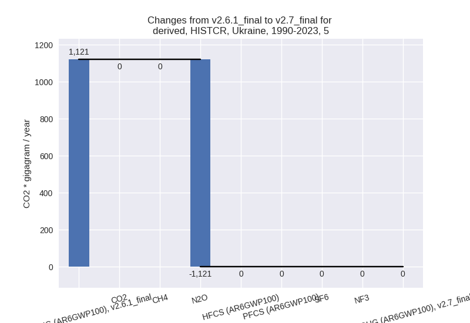
third party scenario (HISTTP):
Most important changes
per time frame
For 2023 the following sector-gas combinations have
the highest absolute impact on national total KyotoGHG (AR6GWP100)
emissions in 2023 (top 5):
- 1: 1.A, CO2 with -8231.28 Gg CO2 / year (-7.8%)
- 2: 1.A, CH4 with 0.00 Gg CO2 / year (0.0%)
- 3: 2, HFCS (AR6GWP100) with 0.00 Gg CO2 / year (0.0%)
- 4: 2, PFCS (AR6GWP100) with 0.00 Gg CO2 / year (0.0%)
- 5: M.AG.ELV, N2O with 0.00 Gg CO2 / year (0.0%)
For 1990-2023 the following sector-gas combinations
have the highest absolute impact on national total KyotoGHG (AR6GWP100)
emissions in 1990-2023 (top 5):
- 1: 1.A, CO2 with -474.79 Gg CO2 / year (-0.1%)
- 2: 1.A, CH4 with 0.00 Gg CO2 / year (0.0%)
- 3: 2, HFCS (AR6GWP100) with 0.00 Gg CO2 / year (0.0%)
- 4: 2, PFCS (AR6GWP100) with 0.00 Gg CO2 / year (0.0%)
- 5: M.AG.ELV, N2O with 0.00 Gg CO2 / year (0.0%)
Changes in the main sectors for aggregate KyotoGHG (AR6GWP100)
are
- 1: Total sectoral emissions in 2022 are 137733.06
Gg CO2 / year which is 72.9% of M.0.EL emissions. 2023 Emissions have
changed by -5.8% (-8231.28 Gg CO2 /
year). 1990-2023 Emissions have changed by -0.1% (-474.79 Gg CO2 / year). For 2023
the changes per gas
are:
The changes come from the following subsectors:
- 1.A: Total sectoral emissions in 2022 are 103210.01
Gg CO2 / year which is 74.9% of category 1 emissions. 2023 Emissions
have changed by -7.7% (-8231.28 Gg
CO2 / year). 1990-2023 Emissions have changed by -0.1% (-474.79 Gg CO2 / year). For 2023
the changes per gas
are:
There is no subsector information available in PRIMAP-hist.
- 1.B.1: Total sectoral emissions in 2022 are 4425.25
Gg CO2 / year which is 3.2% of category 1 emissions. 2023 Emissions have
changed by 0.0% (0.00 Gg CO2 /
year). 1990-2023 Emissions have changed by 0.0% (0.00 Gg CO2 / year).
- 1.B.2: Total sectoral emissions in 2022 are
30097.79 Gg CO2 / year which is 21.9% of category 1 emissions. 2023
Emissions have changed by 0.0% (0.00
Gg CO2 / year). 1990-2023 Emissions have changed by 0.0% (0.00 Gg CO2 / year).
- 2: Total sectoral emissions in 2022 are 11371.57 Gg
CO2 / year which is 6.0% of M.0.EL emissions. 2023 Emissions have
changed by 0.0% (0.00 Gg CO2 /
year). 1990-2023 Emissions have changed by 0.0% (0.00 Gg CO2 / year).
- M.AG: Total sectoral emissions in 2022 are 28838.57
Gg CO2 / year which is 15.3% of M.0.EL emissions. 2023 Emissions have
changed by 0.0% (0.00 Gg CO2 /
year). 1990-2023 Emissions have changed by 0.0% (0.00 Gg CO2 / year).
- 4: Total sectoral emissions in 2022 are 10604.36 Gg
CO2 / year which is 5.6% of M.0.EL emissions. 2023 Emissions have
changed by 0.0% (0.00 Gg CO2 /
year). 1990-2023 Emissions have changed by 0.0% (0.00 Gg CO2 / year).
- 5: Total sectoral emissions in 2022 are 496.51 Gg
CO2 / year which is 0.3% of M.0.EL emissions. 2023 Emissions have
changed by 0.0% (0.00 Gg CO2 /
year). 1990-2023 Emissions have changed by 0.0% (0.00 Gg CO2 / year).